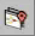
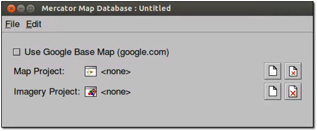

Google Earth Enterprise Documentation Home | Fusion resources and projects
Add flat imagery to Mercator map databases in GEE 5.1.0
When you build a Mercator-based map database, you must build imagery projects specifically for use with Mercator-based projection (EPSG: 3857). However, with GEE 5.1.0, if you already have database imagery projects in the Plate Carrée projection (EPSG: 4326), you can re-use them for your Mercator-based map database using Mercator on the Fly. When disk space is a key consideration, you only need imagery projects in Plate Carrée projection for 2D flat, 2D Mercator, and 3D databases, reducing the storage requirements for your assets.
Mercator on the Fly converts a Plate Carrée-based imagery project into a Mercator-based imagery project when you create your map database in Fusion. When GEE Server hosts the published Mercator database, the server requests the Mercator on the Fly imagery project in the database and serves it with a Mercator projection. With some projections, you may see a reduction in serving speed when projecting a Mercator on the Fly imagery project. For more information about performance, see Mercator on the Fly Performance Data.
As you decide which type of imagery project to build, you’ll need to consider the projection types you need and whether disk space or serving speed is important. For 2D flat, 2D Mercator, and 3D databases, you can use flat imagery with Mercator on the Fly if disk space is a key consideration. However if serving speed is a key consideration, you should build both flat and Mercator imagery projects. The following table shows the decision matrix to guide you:
| Build projects/serve databases | Mercator | 2D flat and 3D | 2D flat, Mercator, and 3D |
|---|---|---|---|
| Flat imagery project | X |  |
Disk space is most important. Flat imagery projects used for all database types, with Mercator on the Fly used to serve flat imagery for Mercator map databases. |
| Mercator imagery project | |
X | |
| Flat and Mercator imagery projects | |
|
Serving speed is most important. Flat imagery projects used for 3D and 2D flat databases; Mercator imagery projects for Mercator map databases. |
Of course, if you’re serving imagery only as Mercator map databases, you should only build Mercator imagery projects.
To add a flat imagery resource to a Mercator-based map database:
- Select Asset Manager from the Tools menu. The Asset Manager dialog appears.
- Select Mercator Map Tools (2D) from the Asset Manager toolbar. The tools for Mercator maps appear in the toolbar.
- Click . The Map Database Editor appears with no projects selected.

ASSET_ROOT/Projects/Map folder.ASSET_ROOT/Projects/Imagery folder.ASSET_ROOT/Databases folder.When Google Earth Enterprise Fusion finishes building the database, its Current State column in the Asset Manager changes to Succeeded, and its Current Version column changes to the date and time the most recent build was started.
Mercator on the Fly performance data
Mercator resolution increases relative to Plate Carrée as latitude increases (or decreases) from the equator for any given map level . Therefore to obtain the correct Mercator resolution, tiles must be sampled from higher Plate Carrée levels (known as upsampling). The higher the latitude, the greater the number of tiles required and, as a result, processing time for Mercator on the Fly increases although not proportionally. The following table lists the number of Plate Carrée tiles required to produce a single Mercator on the Fly tile vs. latitude (north or south) and the approximate expected increase in processing time assuming cached tiles.
| Approximate Latitude Range(degrees) | Level Up to sample | MotF P.C. tiles processed | Max Relative Clock Time Ratio (relative to 1 tile) |
|---|---|---|---|
| 0 to 40 | 1 | 1-2 | 1 to 1.2 (2 tiles) |
| 40 to 65 | 2 | up to 4 | 2.1 (4 tiles) |
| 56 to 75 | 3 | up to 8 | 3.2 (8 tiles) |
| 75 to 85 | 4 | up to 16 | 5.1 (16 tiles) |